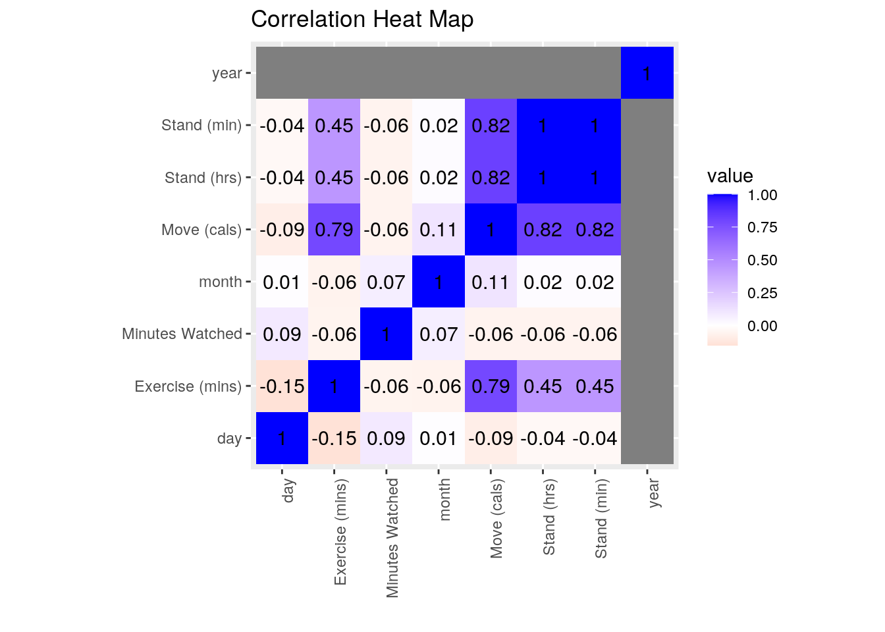
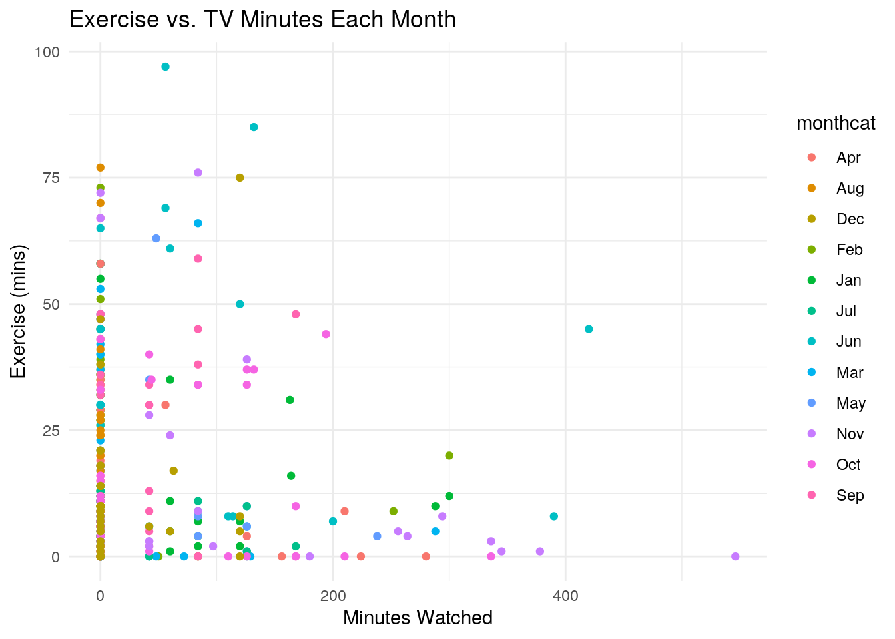
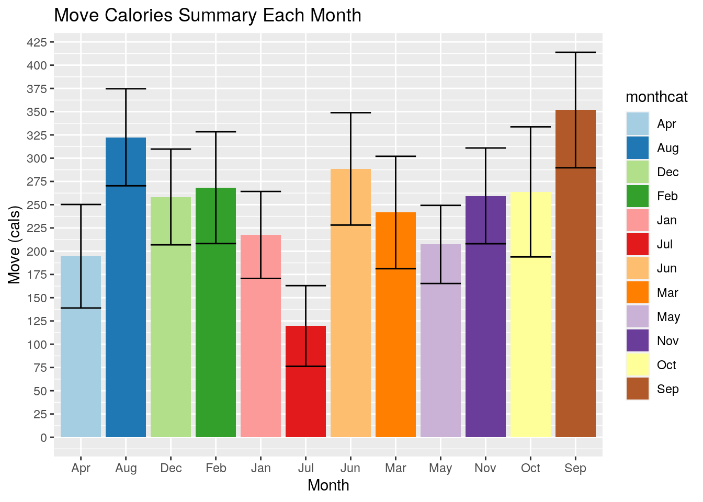
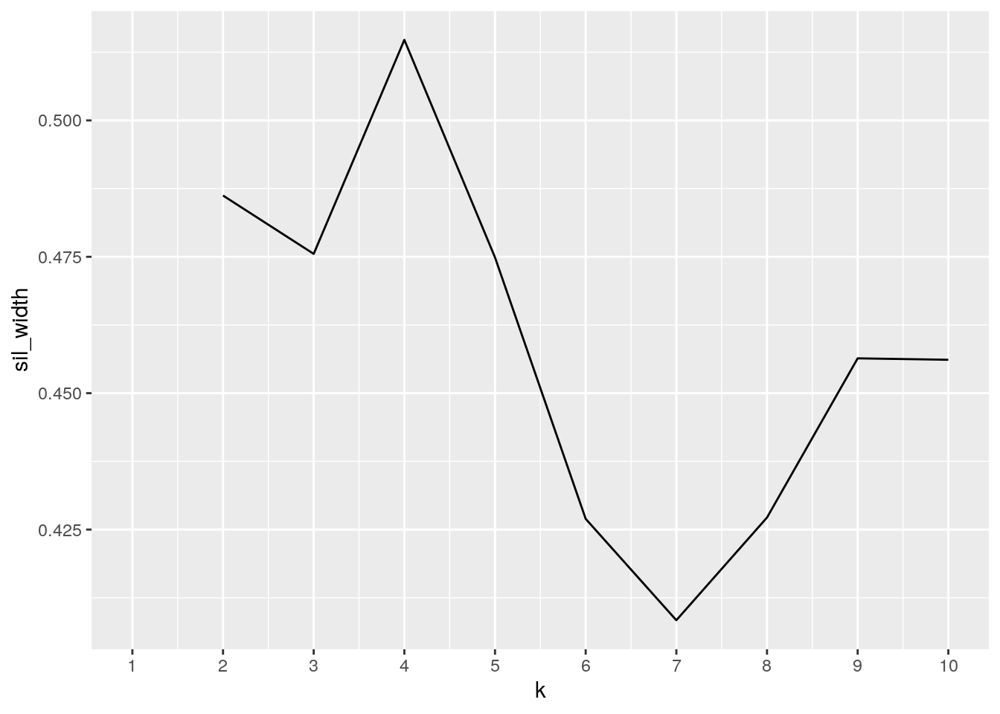
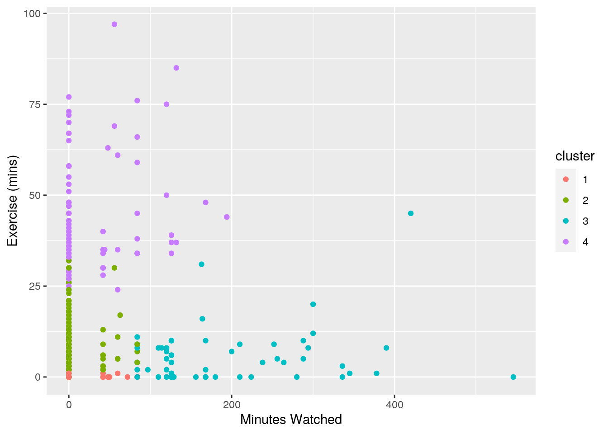
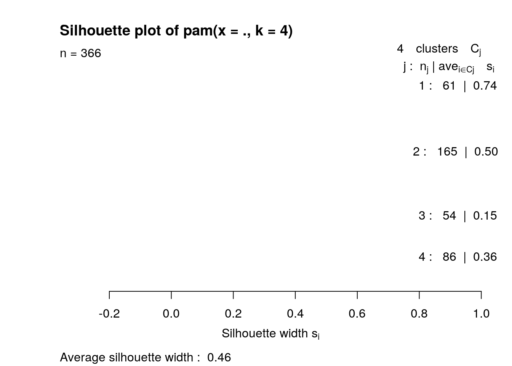

Introduction I chose to use personal data for this project as I would love to see how this class can apply to an analysis of my daily life. The two data sets I used were Netflix viewing data and Apple Watch workout statistics. The Netflix viewing data for the year of 2020 was requested from Netflix for my account. Then, I took the data and altered it to make it more fitting for the project. Originally the data contained the names of the shows I watched each day, but I wanted to know the minutes of viewing time, so I hand calculated the minutes of Netflix viewed each day in 2020. Then, I used the Acitivity app on my watch to make a table of my Move goal calories, my Stand goal hours, and my Exercise goal minutes for everyday in 2020. There is data for everyday of 2020 even if it is given as 0 because I wanted to see if there was a correlation between my activity throughout the day and how much Netflix I watched in 2020. This is super interesting to me because I think 2020 was quite the weird year in which I picked up many new hobbies, including working out and wacthing documentaries, and I would love to see the overall change this made in my lifestyle throughout the year. I expect to see an inverse relationship between Netflix viewing time and Activity statistics overall, because if I was more active, I was less likely to be sitting on the couch and watching Netflix, and I expect to see this relationship within the data.
library(tidyverse)
netflix <- read_csv("Netflix.csv")
workout <- read_csv("Workout.csv")
yearstat <- workout %>% full_join(netflix)
head(yearstat)## # A tibble: 6 x 5
## Date `Move (cals)` `Exercise (mins)` `Stand (hrs)` `Minutes Watched`
## <chr> <dbl> <dbl> <dbl> <dbl>
## 1 01/01/2020 0 0 0 0
## 2 01/02/2020 0 0 0 0
## 3 01/03/2020 285 7 13 0
## 4 01/04/2020 98 3 4 0
## 5 01/05/2020 132 6 6 0
## 6 01/06/2020 279 10 11 288I chose to do a full join for my data set because I wanted all of the columns in my data sets to appear for the new data. No rows were lost because all rows are complete meaning there is no date missing from either data set. This is good because more complete data will provide a more accurate analysis of the statistics. This fully joined data shows all columns from the Netflix data and the Activity data joined by the date as a full join was done.
glimpse(yearstat)## Rows: 366
## Columns: 5
## $ Date <chr> "01/01/2020", "01/02/2020", "01/03/2020", "01/04/20…
## $ `Move (cals)` <dbl> 0, 0, 285, 98, 132, 279, 158, 253, 164, 260, 278, 1…
## $ `Exercise (mins)` <dbl> 0, 0, 7, 3, 6, 10, 2, 6, 4, 5, 2, 2, 11, 7, 12, 11,…
## $ `Stand (hrs)` <dbl> 0, 0, 13, 4, 6, 11, 8, 12, 8, 15, 9, 5, 15, 11, 12,…
## $ `Minutes Watched` <dbl> 0, 0, 0, 0, 0, 288, 84, 0, 84, 60, 0, 0, 0, 84, 300…longstat <- yearstat %>% separate(Date, into = c("month",
"day", "year"))
intstat <- longstat %>% mutate_if(is.character, as.integer)
catdat <- intstat %>% mutate(monthcat = case_when(month ==
1 ~ "Jan", month == 2 ~ "Feb", month == 3 ~ "Mar",
month == 4 ~ "Apr", month == 5 ~ "May", month ==
6 ~ "Jun", month == 7 ~ "Jul", month == 8 ~
"Aug", month == 9 ~ "Sep", month == 10 ~ "Oct",
month == 11 ~ "Nov", month == 12 ~ "Dec"))
mindat <- catdat %>% mutate(`Stand (min)` = 60 * `Stand (hrs)`)
mincat <- mindat %>% mutate(tvcat_cat = case_when(`Minutes Watched` >
145 ~ "high", `Minutes Watched` <= 145 & 41 <=
`Minutes Watched` ~ "med", `Minutes Watched` <
41 ~ "low"))
head(mincat)## # A tibble: 6 x 10
## month day year `Move (cals)` `Exercise (mins… `Stand (hrs)`
## <int> <int> <int> <dbl> <dbl> <dbl>
## 1 1 1 2020 0 0 0
## 2 1 2 2020 0 0 0
## 3 1 3 2020 285 7 13
## 4 1 4 2020 98 3 4
## 5 1 5 2020 132 6 6
## 6 1 6 2020 279 10 11
## # … with 4 more variables: `Minutes Watched` <dbl>, monthcat <chr>, `Stand
## # (min)` <dbl>, tvcat_cat <chr>This helped clean up the data and make it easier to read and use. First, the date, that was originally in MM/DD/YYYY, was separated using the dplyr separate function to show month, date, and year as three separate columns. Next, these were changed into integer variables instead of character variables using mutate if as these were the only columns that were still characters at this point. Next, the month column was mutated to be a categorical variable for later use using the mutate function to form the column called monthcat. Then, the stand hours variable was manipulated to show a stand minutes column by multiplying the stand hours column by 60 using mutate. Lastly, a categorical variable was made using mutate in which the minutes watched was categorized into high, medium, and low minutes watched using the mutate function, shown as the varibale tvcat_cat.
mincat %>% filter(month == 3) %>% arrange(desc(`Minutes Watched`))## # A tibble: 31 x 10
## month day year `Move (cals)` `Exercise (mins… `Stand (hrs)`
## <int> <int> <int> <dbl> <dbl> <dbl>
## 1 3 30 2020 201 5 8
## 2 3 22 2020 0 0 0
## 3 3 25 2020 259 6 12
## 4 3 31 2020 473 66 12
## 5 3 16 2020 0 0 0
## 6 3 29 2020 0 0 0
## 7 3 21 2020 0 0 0
## 8 3 1 2020 258 11 11
## 9 3 2 2020 378 40 10
## 10 3 3 2020 435 42 15
## 11 3 4 2020 419 58 13
## 12 3 5 2020 341 30 11
## 13 3 6 2020 303 21 12
## 14 3 7 2020 292 11 9
## 15 3 8 2020 271 17 11
## 16 3 9 2020 440 47 13
## 17 3 10 2020 413 48 14
## 18 3 11 2020 420 37 13
## 19 3 12 2020 304 23 9
## 20 3 13 2020 182 6 7
## 21 3 14 2020 0 0 0
## 22 3 15 2020 0 0 0
## 23 3 17 2020 0 0 0
## 24 3 18 2020 215 30 3
## 25 3 19 2020 218 3 10
## 26 3 20 2020 335 9 12
## 27 3 23 2020 415 40 14
## 28 3 24 2020 403 53 9
## 29 3 26 2020 335 45 6
## 30 3 27 2020 180 4 9
## 31 3 28 2020 0 0 0
## # … with 4 more variables: `Minutes Watched` <dbl>, monthcat <chr>, `Stand
## # (min)` <dbl>, tvcat_cat <chr>This table was used to show the month of March in the year 2020 using the filter function. Then, the minutes watched was arranged in descending order, using the arrange function, to show most to least minutes watched for everyday in March. This table is cool because it shows the month of March 2020, which was when quarantine started. This is interesting because on March 15th the COVID-19 situation got a lot more serious and the quarantine began meaning there wasn’t much to do. This table shows that the most minutes watched were towards the end of the month when the quarantine began and everything was closed, which makes sense because this is when my documentary wacthing hobby really began.
ndist <- mincat %>% select(is.numeric) %>% summarize_all(n_distinct)
meanvars <- mincat %>% select(is.numeric) %>% summarize_all(mean)
sdvars <- mincat %>% select(is.numeric) %>% summarize_all(sd)
varvars <- mincat %>% select(is.numeric) %>% summarize_all(var)
catstat <- mincat %>% group_by(monthcat) %>% summarize_all(mean) %>%
arrange(desc(`Stand (min)`))
catstat## # A tibble: 12 x 10
## monthcat month day year `Move (cals)` `Exercise (mins… `Stand (hrs)`
## <chr> <dbl> <dbl> <dbl> <dbl> <dbl> <dbl>
## 1 Aug 8 16 2020 322. 17.6 9.48
## 2 Jun 6 15.5 2020 288. 24.9 9.33
## 3 Sep 9 15.5 2020 352. 24.5 8.93
## 4 Dec 12 16 2020 258. 11.9 8.58
## 5 Feb 2 15 2020 268. 27.9 8.38
## 6 Jan 1 16 2020 217. 12.9 8.35
## 7 May 5 16 2020 207. 8.52 8.29
## 8 Nov 11 15.5 2020 260. 14.0 8.17
## 9 Mar 3 16 2020 242. 21.0 7.84
## 10 Oct 10 16 2020 264. 14.8 7.13
## 11 Apr 4 15.5 2020 195. 10.8 6.53
## 12 Jul 7 16 2020 120. 5.29 4.90
## # … with 3 more variables: `Minutes Watched` <dbl>, `Stand (min)` <dbl>,
## # tvcat_cat <dbl>mincat %>% group_by(monthcat) %>% summarize_all(max)## # A tibble: 12 x 10
## monthcat month day year `Move (cals)` `Exercise (mins… `Stand (hrs)`
## <chr> <int> <int> <int> <dbl> <dbl> <dbl>
## 1 Apr 4 30 2020 515 58 13
## 2 Aug 8 31 2020 706 77 15
## 3 Dec 12 31 2020 631 75 17
## 4 Feb 2 29 2020 514 73 15
## 5 Jan 1 31 2020 509 55 15
## 6 Jul 7 31 2020 371 18 13
## 7 Jun 6 30 2020 590 97 15
## 8 Mar 3 31 2020 473 66 15
## 9 May 5 31 2020 508 63 16
## 10 Nov 11 30 2020 520 76 14
## 11 Oct 10 31 2020 564 44 13
## 12 Sep 9 30 2020 631 67 15
## # … with 3 more variables: `Minutes Watched` <dbl>, `Stand (min)` <dbl>,
## # tvcat_cat <chr>mincat %>% group_by(monthcat) %>% summarize_all(min)## # A tibble: 12 x 10
## monthcat month day year `Move (cals)` `Exercise (mins… `Stand (hrs)`
## <chr> <int> <int> <int> <dbl> <dbl> <dbl>
## 1 Apr 4 1 2020 0 0 0
## 2 Aug 8 1 2020 0 0 0
## 3 Dec 12 1 2020 0 0 0
## 4 Feb 2 1 2020 0 0 0
## 5 Jan 1 1 2020 0 0 0
## 6 Jul 7 1 2020 0 0 0
## 7 Jun 6 1 2020 0 0 0
## 8 Mar 3 1 2020 0 0 0
## 9 May 5 1 2020 0 0 0
## 10 Nov 11 1 2020 0 0 0
## 11 Oct 10 1 2020 0 0 0
## 12 Sep 9 1 2020 0 0 0
## # … with 3 more variables: `Minutes Watched` <dbl>, `Stand (min)` <dbl>,
## # tvcat_cat <chr>To create a table of summary statistics, first vectors of each variables n_distinct, mean, standard deviation, and variation were made using the select and summarize_all functions for use later. Then, a more interesting table was made by grouping by month categorical and summarizing all by mean, then arranging by the mean stand minutes for each month. This is interesting because the month of August 2020 had the most mean stand hours for the year of 2020. In the month of August I moved back to Austin to begin school and walked to many appointments and study spots around campus to keep busy. This is reflected in the table. The last two tables show the maximum and minimum values for each variable by month. These tables are interesting because they allow someone to see what activity was more popular and less popular each month and make hypotheses about these numbers.
##Tidying:
summarytabs <- data.frame(ndist, meanvars, sdvars,
varvars)
head(summarytabs)## month day year Move..cals. Exercise..mins. Stand..hrs. Minutes.Watched
## 1 12 31 1 226 67 18 40
## Stand..min. month.1 day.1 year.1 Move..cals..1 Exercise..mins..1
## 1 18 6.513661 15.75683 2020 249.0683 16.09836
## Stand..hrs..1 Minutes.Watched.1 Stand..min..1 month.2 day.2 year.2
## 1 7.989071 39.48361 479.3443 3.455958 8.823592 0
## Move..cals..2 Exercise..mins..2 Stand..hrs..2 Minutes.Watched.2 Stand..min..2
## 1 157.9539 18.86073 4.510553 80.74841 270.6332
## month.3 day.3 year.3 Move..cals..3 Exercise..mins..3 Stand..hrs..3
## 1 11.94365 77.85578 0 24949.43 355.7273 20.34509
## Minutes.Watched.3 Stand..min..3
## 1 6520.305 73242.31sumtabs <- summarytabs %>% rename(month.ndist = month,
day.ndist = day, Move.ndist = Move..cals., Exercisemin.ndist = Exercise..mins.,
Standhrs.ndist = Stand..hrs., minwatch.ndist = Minutes.Watched,
standmin.ndist = Stand..min., month.mean = month.1,
day.mean = day.1, Move.mean = Move..cals..1, Exercisemin.mean = Exercise..mins..1,
Standhrs.mean = Stand..hrs..1, minwatch.mean = Minutes.Watched.1,
standmin.mean = Stand..min..1, month.sd = month.2,
day.sd = day.2, Move.sd = Move..cals..2, Exercisemin.sd = Exercise..mins..2,
Standhrs.sd = Stand..hrs..2, minwatch.sd = Minutes.Watched.2,
standmin.sd = Stand..min..2, month.vars = month.3,
day.vars = day.3, Move.vars = Move..cals..3, Exercisemin.vars = Exercise..mins..3,
Standhrs.vars = Stand..hrs..3, minwatch.vars = Minutes.Watched.3,
standmin.vars = Stand..min..3, year.ndist = year,
year.mean = year.1, year.sd = year.2, year.vars = year.3)
dubwide <- sumtabs %>% pivot_longer(1:32)
dubwide## # A tibble: 32 x 2
## name value
## <chr> <dbl>
## 1 month.ndist 12
## 2 day.ndist 31
## 3 year.ndist 1
## 4 Move.ndist 226
## 5 Exercisemin.ndist 67
## 6 Standhrs.ndist 18
## 7 minwatch.ndist 40
## 8 standmin.ndist 18
## 9 month.mean 6.51
## 10 day.mean 15.8
## 11 year.mean 2020
## 12 Move.mean 249.
## 13 Exercisemin.mean 16.1
## 14 Standhrs.mean 7.99
## 15 minwatch.mean 39.5
## 16 standmin.mean 479.
## 17 month.sd 3.46
## 18 day.sd 8.82
## 19 year.sd 0
## 20 Move.sd 158.
## 21 Exercisemin.sd 18.9
## 22 Standhrs.sd 4.51
## 23 minwatch.sd 80.7
## 24 standmin.sd 271.
## 25 month.vars 11.9
## 26 day.vars 77.9
## 27 year.vars 0
## 28 Move.vars 24949.
## 29 Exercisemin.vars 356.
## 30 Standhrs.vars 20.3
## 31 minwatch.vars 6520.
## 32 standmin.vars 73242.StatTable <- dubwide %>% separate(name, into = c("Variable",
"Statistic")) %>% pivot_wider(names_from = "Statistic",
values_from = "value")
StatTable## # A tibble: 8 x 5
## Variable ndist mean sd vars
## <chr> <dbl> <dbl> <dbl> <dbl>
## 1 month 12 6.51 3.46 11.9
## 2 day 31 15.8 8.82 77.9
## 3 year 1 2020 0 0
## 4 Move 226 249. 158. 24949.
## 5 Exercisemin 67 16.1 18.9 356.
## 6 Standhrs 18 7.99 4.51 20.3
## 7 minwatch 40 39.5 80.7 6520.
## 8 standmin 18 479. 271. 73242.This code first makes a data set of the four vectors created in the previous section of code. Then, variables were renamed for more clarity when pivoting. Next, a pivot longer function was used and shown above as dubwide. However, this data is double wide as it contains two variables in the name column data. So, the name column was separated using the separate function to create a new columns called variable and statistic. This was then pivoted wider to make the statistics column variables become the column names with the variable column staying as the row names. This allowed an easy to read table fo the summary statistics for each numeric variable in the data set. The most interesting result was that the stand minutes had the highest standard deviation. This is interesting because I stand up more than I do work out. Some days I didn’t work out at all. So, I would expect move goals and exercise goals to have more standard deviation over the stand minutes as stand minutes was a more common thing that I thought I did consistently each day.
mincat %>% select_if(is.numeric) %>% cor %>% as.data.frame %>%
rownames_to_column %>% pivot_longer(-1) %>% ggplot(aes(rowname,
name, fill = value)) + geom_tile() + ggtitle("Correlation Heat Map") +
scale_fill_gradient2(low = "red", mid = "white",
high = "blue") + geom_text(aes(label = round(value,
2)), color = "black", size = 4) + xlab("") + ylab("") +
coord_fixed() + theme(axis.text.x = element_text(angle = 90,
hjust = 1)) This correlation heat map shows the correlation between each variable. The heat map above shows a large correlation between stand time (both minutes and hours) and move calories. It also shows a strong positive correlation between move calories and exercise minutes. This is because if I am moving then I am also most likely exercising in some way as well as standing. Lastly, The heat map shows a complete positive correlation between stand minutes and stand hours because the stand minutes are a direct function of stand hours created earlier by the mutate function. There are low correlations for the rest of the variables.
ggplot(mincat, aes(`Minutes Watched`, `Exercise (mins)`,
color = monthcat)) + geom_point() + ggtitle("Exercise vs. TV Minutes Each Month") +
theme_minimal()
The first correlation plot shown is between the variables exercise minutes and minutes watched, colored by month category. This plot shows little to no correlation between the two variables, which is surprising considering if I am not working out, I am spending my free time watching Netflix, so I would expect to see a strong negative correlation between these two variables.
##Visualization 2:
ggplot(mincat, aes(x = monthcat, y = `Move (cals)`)) +
geom_bar(stat = "summary", fun = mean, aes(fill = monthcat)) +
geom_errorbar(stat = "summary", fun.data = mean_cl_normal) +
scale_y_continuous(breaks = seq(0, 450, 25)) +
xlab("Month") + scale_fill_brewer(palette = "Paired") +
ggtitle("Move Calories Summary Each Month") The next plot uses stat summary. The bars are colored by month and show the mean and standard deviation of each months move calories. This is not surprising because the tallest bar is the bar for the month of September which is when I first began working out heavily during the school year as a way to relieve stress. The shortest bar is in July which is also not surprising because during this time I was doing 15 hours of summer school and didn’t spend much time working out at all, which is clearly represented in the plot. Each bar shows a pretty consistent standard deviation as I am consistent in wokring out about once a week so varaition would come from that consistency.
library(cluster)
temp <- mincat %>% select(`Minutes Watched`, `Exercise (mins)`,
`Move (cals)`)
sil_width <- vector()
for (i in 2:10) {
pam_fit <- pam(temp, k = i)
sil_width[i] <- pam_fit$silinfo$avg.width
}
ggplot() + geom_line(aes(x = 1:10, y = sil_width)) +
scale_x_continuous(name = "k", breaks = 1:10) The plot above shows where the optimal number of clusters is for the minutes watched, exercise minutes, and move calories, which is shown as 4 because this is the peak of the plot.
library(cluster)
clust <- mincat %>% dplyr::select(`Minutes Watched`,
`Exercise (mins)`, `Move (cals)`)
pam5 <- clust %>% scale %>% pam(4)
pam5## Medoids:
## ID Minutes Watched Exercise (mins) Move (cals)
## [1,] 359 -0.4889707 -0.8535384 -1.57684196
## [2,] 271 -0.4889707 -0.3763565 0.09453199
## [3,] 189 1.5915657 -0.7474980 -0.64619056
## [4,] 63 -0.4889707 1.3733103 1.17712648
## Clustering vector:
## [1] 1 1 2 1 2 3 3 2 3 2 2 1 2 2 3 2 4 3 1 1 4 2 4 2 3 2 3 4 3 2 2 1 2 4 4 4 4
## [38] 4 1 1 4 4 1 4 3 3 2 4 4 2 1 1 4 1 4 4 4 4 4 4 2 4 4 4 4 2 2 2 4 4 4 2 2 1
## [75] 1 1 1 2 2 2 1 3 4 4 3 4 2 1 1 3 4 2 2 3 3 1 4 4 4 2
## [ reached getOption("max.print") -- omitted 266 entries ]
## Objective function:
## build swap
## 0.7150472 0.7101116
##
## Available components:
## [1] "medoids" "id.med" "clustering" "objective" "isolation"
## [6] "clusinfo" "silinfo" "diss" "call" "data"pclust <- clust %>% mutate(cluster = as.factor(pam5$clustering)) #save the cluster solution in your dataset
ggplot(pclust, aes(x = `Minutes Watched`, y = `Exercise (mins)`,
color = cluster)) + geom_point()
library(plotly)
pclust %>% plot_ly(x = ~`Minutes Watched`, y = ~`Exercise (mins)`,
z = ~`Move (cals)`, color = ~cluster, type = "scatter3d",
mode = "markers") %>% layout(autosize = F, width = 900,
height = 400)library(GGally)
plot(pam5, which = 2) Lastly, a PAM clustering was done and visualized on the plot above with minutes watched on the x axis, exercise minutes on the y axis and move calories on the z axis and a normal plot of just the exercise minutes and minutes watched. The scatter plot shows no correlation between exercise minutes and minutes watched and the xyz plot only shows strong positive correlation between exercise minutes and move calories. This is surprising because once again, I normally split my free time between watching Netflix and working out so I would expect to see a negative correlation between exercise minutes or move calories and minutes watched. Also, I expect to see a strong positive correlation between exercise minutes and move calories as when I am exercising I should be burning some amount of calories along with it. This is shown in the xyz plot of the data. A silhouette width analysis was done on this clustering and shows values of 0.74, 0.50, 0.15, and 0.36. This shows that a strong structure was found for cluster one but clusters 2 and 4 show little or artificial structure and cluster 3 shows no structure.
## R version 3.6.1 (2019-07-05)
## Platform: x86_64-pc-linux-gnu (64-bit)
## Running under: Ubuntu 18.04.5 LTS
##
## Matrix products: default
## BLAS: /stor/system/opt/R/R-3.6.1/lib/R/lib/libRblas.so
## LAPACK: /stor/system/opt/R/R-3.6.1/lib/R/lib/libRlapack.so
##
## locale:
## [1] LC_CTYPE=en_US.UTF-8 LC_NUMERIC=C
## [3] LC_TIME=en_US.UTF-8 LC_COLLATE=en_US.UTF-8
## [5] LC_MONETARY=en_US.UTF-8 LC_MESSAGES=en_US.UTF-8
## [7] LC_PAPER=en_US.UTF-8 LC_NAME=C
## [9] LC_ADDRESS=C LC_TELEPHONE=C
## [11] LC_MEASUREMENT=en_US.UTF-8 LC_IDENTIFICATION=C
##
## attached base packages:
## [1] stats graphics grDevices utils datasets methods base
##
## other attached packages:
## [1] GGally_2.1.0 plotly_4.9.2.2 cluster_2.1.0 forcats_0.5.0
## [5] stringr_1.4.0 dplyr_1.0.2 purrr_0.3.4 readr_1.4.0
## [9] tidyr_1.1.2 tibble_3.0.4 ggplot2_3.3.3 tidyverse_1.3.0
##
## loaded via a namespace (and not attached):
## [1] httr_1.4.2 viridisLite_0.3.0 jsonlite_1.7.2
## [4] splines_3.6.1 modelr_0.1.8 Formula_1.2-4
## [7] assertthat_0.2.1 latticeExtra_0.6-29 cellranger_1.1.0
## [10] yaml_2.2.1 pillar_1.4.7 backports_1.2.1
## [13] lattice_0.20-41 glue_1.4.2 digest_0.6.27
## [16] RColorBrewer_1.1-2 checkmate_2.0.0 rvest_0.3.6
## [19] colorspace_2.0-0 plyr_1.8.6 htmltools_0.5.0
## [22] Matrix_1.3-2 pkgconfig_2.0.3 broom_0.7.3
## [25] haven_2.3.1 bookdown_0.21 scales_1.1.1
## [28] jpeg_0.1-8.1 htmlTable_2.1.0 generics_0.1.0
## [31] farver_2.0.3 ellipsis_0.3.1 withr_2.3.0
## [34] lazyeval_0.2.2 nnet_7.3-14 cli_2.2.0
## [37] survival_3.2-7 magrittr_2.0.1 crayon_1.3.4
## [40] readxl_1.3.1 evaluate_0.14 fs_1.5.0
## [43] fansi_0.4.1 xml2_1.3.2 foreign_0.8-71
## [46] blogdown_0.20 data.table_1.13.6 tools_3.6.1
## [49] hms_0.5.3 formatR_1.7 lifecycle_0.2.0
## [52] munsell_0.5.0 reprex_0.3.0 compiler_3.6.1
## [55] rlang_0.4.10 grid_3.6.1 rstudioapi_0.13
## [58] htmlwidgets_1.5.3 crosstalk_1.1.0.1 base64enc_0.1-3
## [61] labeling_0.4.2 rmarkdown_2.6 gtable_0.3.0
## [64] reshape_0.8.8 DBI_1.1.0 R6_2.5.0
## [67] gridExtra_2.3 lubridate_1.7.9.2 knitr_1.30
## [70] utf8_1.1.4 Hmisc_4.4-2 stringi_1.5.3
## [73] Rcpp_1.0.5 vctrs_0.3.6 rpart_4.1-15
## [76] png_0.1-7 dbplyr_2.0.0 tidyselect_1.1.0
## [79] xfun_0.20## [1] "2021-05-08 23:48:03 CDT"## sysname
## "Linux"
## release
## "4.15.0-142-generic"
## version
## "#146-Ubuntu SMP Tue Apr 13 01:11:19 UTC 2021"
## nodename
## "educcomp01.ccbb.utexas.edu"
## machine
## "x86_64"
## login
## "unknown"
## user
## "mis696"
## effective_user
## "mis696"